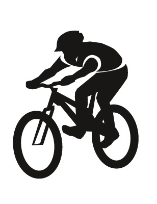

나의 여가생활
음악감상은 취미라기보다는 저의 일상과 같습니다.
이동을 할 때던, 집에서 시간을 보내던, 무엇을 하던지 혼자만의 시간을 보낼 때에는 항상 음악을 듣습니다.
물론 정말 집중을 해야될 때는 지양하지만 다양한 장르의 음악을 듣는 것은 여러분야에서 트렌드를 이해하는데에도 도움이 될 때가 있습니다.
자전거타기는 유일하게 즐기는 스포츠입니다.
원래 야외활동을 좋아하지 않았지만 제대로 된 자전거를 가지고 난 뒤로는 주말마다 탈 정도로 빈도 수가 정말 많이 늘었습니다.
특히 이번학기에는 자전거를 이용한 교양수업을 통해서 여러가지 자전거이용에 대한 규범도 배우고 여러사람들과 같이 라이딩하는 재미도 새롭게 느낄 수 있었습니다.

게임의 장르는 가리지 않습니다.
어렸을 때에는 PC게임 중에서도 온라인게임, 즉 무료로 플레이 가능한 게임만 했지만 성인이 되어 돈을 벌때부터는 콘솔게임, 비디오게임 등을 조금씩 구매하여 다양한 장르의 게임을 접해보고 있습니다.
게임은 프로그래밍과 그래픽디자이너들의 모든 노력의 결과물이기 때문에 프로그래머로서의 사고에도 도움이 되는 것 같습니다.